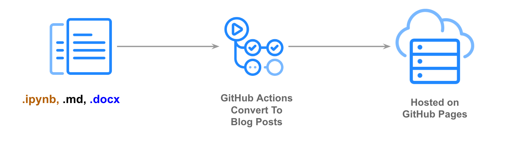
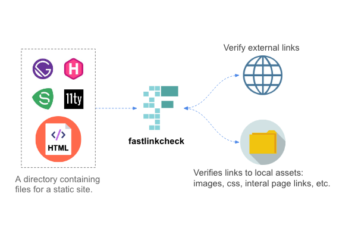

An easy to use blogging platform with extra features for Jupyter Notebooks

Say goodbye broken links on your static sites. Platform independent, fast, and built in python.
A unique python library that extends the python programming language and provides utilities that enhance productivity.
A Tutorial on GitHub Actions For Data Scientists
How a new GitHub feature makes literate programming easier than ever before.
A tutorial of fastpages for Jupyter notebooks.
A minimal example of using markdown with nbpages.